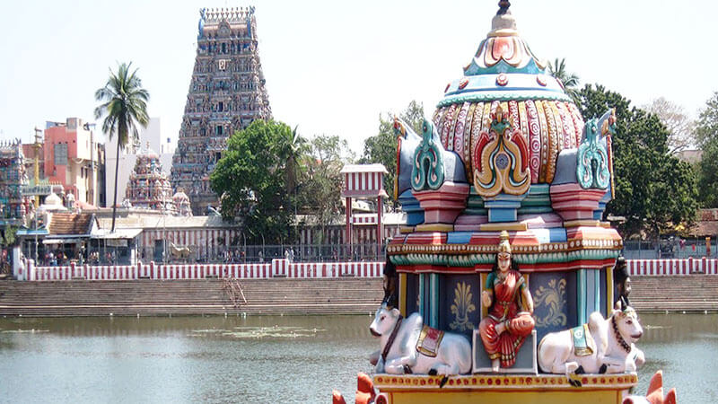
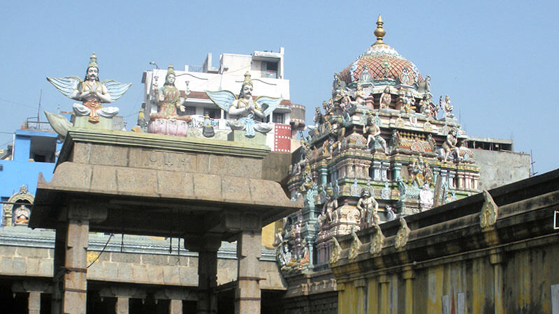

Chennai formerly known as Madras,is the capital city of Tamil Nadu, the southernmost state of India.
It is the state's primate city and is located on the Coromandel Coast of the Bay of Bengal.
According to the 2011 Indian census, Chennai is the sixth-most populous city in India and forms the fourth-most populous urban agglomeration.
Incorporated in 1688, the Greater Chennai Corporation is the oldest municipal corporation in India and the second oldest in the world after London.

The Kapaleeshwarar Temple is a Hindu temple dedicated to the god Shiva located in Mylapore, Chennai in the Indian state of Tamil Nadu.
The temple was built around the 7th century CE and is an example of South Indian Architecture.
According to the Puranas, Parvati worshipped her husband Shiva in the form of a peahen (mayil in Tamil),
giving the vernacular name Mylai (Mayilāi) to the area that developed around the temple.
Shiva is worshiped as Kapaleeshwarar, and is represented by the lingam. Parvati is worshipped as Karpagambal (goddess of the wish-yielding tree).
The presiding deity is revered in the 7th-century Tamil Shaiva canonical work, the Tevaram, written by Tamil saint poets known as the Nayanars and classified as one of the Paadal Petra Sthalam.

The Parthasarathy Temple is a 6th-century Hindu Vaishnavite temple dedicated to Vishnu in Chennai, India. Located in the neighbourhood of Thiruvallikeni, the temple is glorified in the Naalayira Divya Prabandham, the early medieval Tamil literature canon of the Alvar saints from the 6th to 9th centuries CE and is classified as among the 108 Divya Desams dedicated to Vishnu.
The name 'Parthasarathy' means the 'charioteer of Arjuna', referring to Krishna's role as a charioteer to Arjuna in the epic Mahabharata.
It was originally built by the Pallavas in the 6th century by king Narasimhavarman I. The temple has icons of five forms of Vishnu: Yoga Narasimha, Rama, Gajendra Varadaraja, Ranganatha, and Krishna as Parthasarathy.[4] The temple is one of the oldest structures in Chennai.[5][6][7][8][9] There are shrines for Vedavalli Thayar, Ranganatha, Rama, Gajendra Varadar, Narasimha, Andal, Hanuman, Alvars, Ramanuja, Swami Manavala Mamunigal and Vedanthachariar. The temple subscribes to Vaikhanasa agama and follows Tenkalai tradition.

Tirumala Tirupati Devasthanams (TTD) is an independent government trust in India which managed by Andhra Pradesh Government, including the Tirumala Venkateswara Temple in Andhra Pradesh.
The trust oversees the operations and finances of the richest and the most visited religious center in the world.
It is also involved in various social, religious, literary and educational activities.
TTD is headquartered at Tirupati and employs about 16,000 people.
Srivani trust was set up by TTD in 2019 to promote Sanātana Dharma by constructing temples in SC-ST-BC habitations, renovating ancient temples, and providing funds under Dhup-Deepa-Naivedyam Scheme to those temples facing financial difficulty.
By January 2023, TTD has taken up construction of 2,068 temples in Andhra Pradesh, Telangana, Pondicherry and Karnataka.
TTD's main source of income is Srivani darshan tickets which were earning it Rs 1 crore per day in January 2024.